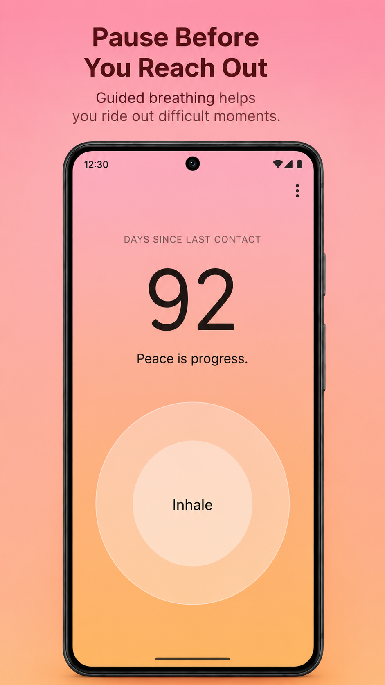

01
iOS & Android app
Breakup Counter
A private, gentle companion for rebuilding after a breakup — with no-contact tracking, breathing exercises, journaling, and meaningful insights.

Healing takes time.
Independent maker · 2026
I’m Thej Siddhotam. I build calm, considered digital products that respect people’s attention and privacy.
01 / Selected apps
A small collection of products shaped around real, human needs.
01
iOS & Android app
A private, gentle companion for rebuilding after a breakup — with no-contact tracking, breathing exercises, journaling, and meaningful insights.

02
iOS & Android app
A capable PDF toolkit that keeps every document on your device. Merge, split, organise and read without accounts, uploads, or internet access.
Every PDF tool, entirely offline.
03
Web tool
An experimental prompt-to-product tool that turns an idea into a working Flask app, helping people move from blank page to useful prototype faster.
› Describe the app you want to make
02 / Cover letter
For teams and people looking to build something that matters.
Open to the right opportunity
Dear hiring team,
I’m a product-minded builder who cares as much about how a product feels as how it functions. I enjoy taking an idea from its earliest shape through to something people can genuinely use — making thoughtful decisions about the experience, the details, and the technology along the way.
My independent work reflects the kind of products I want to make: useful, calm, and respectful of people. From a private healing companion to an entirely offline PDF toolkit, I’m drawn to problems where good design can make a meaningful difference.
I’d be excited to bring that care, curiosity, and practical maker mindset to a team building products with real purpose.
Warmly,
Thej Siddhotam
03 / Curriculum vitae
Experience, skills, and background in one place.
Open CV ↗Download PDF ↓